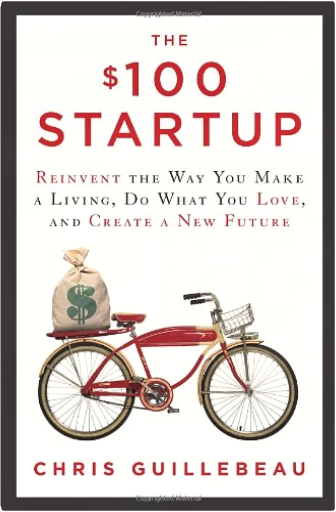

Pop Manga: How to Draw the Coolest, Cutest Characters, Animals, Mascots, and MoreCamilla D'Errico, Stephen W. Martin Renowned manga artist and comics creator Camilla D'Errico's beginner's guide to drawing her signature Japanese-style characters.
From comics to video games to contemporary fine art, the beautiful, wide-eyed-girl look of shoujo manga has infiltrated pop culture, and no artist's work today better exemplifies this trend than Camilla D'Errico's. In her first instructional guide, D'Errico reveals techniques for creating her emotive yet playful manga characters, with lessons on drawing basic body construction, capturing action, and creating animals, chibis, and mascots.
Plus, she gives readers a behind-the-scenes look at her character design process, pointers on creating their own comics, and prompts for finishing her drawings. Pop Manga is both a celebration of creativity and an indispensible guide that is sure to appeal to manga diehards and aspiring artists alike. Wearing WhiteJanet Dailey Dear friend,
True love changes everything...and true love endures. These timeless stories prove that twice over—and I enjoyed revising them for you.
A Tradition Of Pride
Shaded with old magnolias and towering loblolly pines, the columned Alexander house stands as a symbol of Southern history—and Lara Alexander Cochran still calls it home. But she's lonely. Ransom MacQuade, the plantation manager, can see that plain as day. And he intends to make her happy as soon as he can get her alone in the moonlight...
The Mating Season
Designer duds...New York attitude...being in the spotlight. Through it all, model Jonni Starr never forgot where she came from: the Starr ranch in Kansas. The road home is long and winding, but she just might find the love she needs at the end of it. Because Gabe Stockman, the ranch's rugged general manager, is waiting for her with open arms...
Remember when you first fell in love? It's time to get that feeling again...
With love,
Janet Dailey Fatal RevenantStephen R. Donaldson The long-awaited sequel to The Runes of the Earth returns readers to the Land-and opens with the reunion of Linden Avery and Thomas Covenant!
Linden Avery, who loved Thomas Covenant and watched him die, has returned to the Land in search of her kidnapped son, Jeremiah. As Fatal Revenant begins, Linden watches from the battlements of Revelstone when the impossible happens-riding ahead of the hordes attacking Revelstone are Jeremiah and Covenant himself, apparently very much alive.
Here in the Land, Jeremiah is healed of the mental condition that had kept him mute and unresponsive for so many years. He is full of life, and devoted to Covenant. But Covenant is strangely changed. Sarcastic and bragging, he no longer seems like the man whom Linden adored. And yet he says he has a plan: he will take her and Jeremiah to a place where they can find a pure source of Earthpower and, after he has achieved his own purposes, Linden will be free to use that great power to go home, to take Jeremiah home, or to do anything else she sees fit. Even though she distrusts the seemingly different man he has now become, how can she make any choice except to follow him?
Their journey will cover unimaginable distances through the Land-even through time itself-and will test Linden's courage again and again. In the end, fulfilling her destiny will call for a terrible leap of faith: Can she give up everything she thought had been restored to her, for the sake of the Land? Living Judaism: The Complete Guide to Jewish Belief, Tradition, and PracticeWayne D. Dosick In Living Judaism, Rabbi Wayne Dosick, Ph.D., author the acclaimed Golden Rules, Dancing with God, and When Life Hurts, offers an engaging and definitive overview of Jewish philosophy and theology, rituals and customs. Combining quality scholarship and sacred spiritual instruction, Living Judaism is a thought-provoking reference and guide for those already steeped in Jewish life, and a comprehensive introduction for those exploring the richness and grandeur of Judaism. Understanding Aleister Crowley's Thoth TarotLon Milo Duquette Aleister Crowley's Thoth Tarot was his final opus, the culmination of a lifetime of occult study and practice. With artist Lady Frieda Harris, he condensed the core of his teaching into the 78 cards of the tarot. Although Crowley's own Book of Thoth provides insight into the cards, it is a complicated, dated book. Now, in clear language, Lon Milo DuQuette provides everything you need to know to get the most out of using the Thoth deck. Why Marx Was RightTerry Eagleton In this combative, controversial book, Terry Eagleton takes issue with the prejudice that Marxism is dead and done with. Taking ten of the most common objections to Marxism—that it leads to political tyranny, that it reduces everything to the economic, that it is a form of historical determinism, and so on—he demonstrates in each case what a woeful travesty of Marx's own thought these assumptions are. In a world in which capitalism has been shaken to its roots by some major crises, Why Marx Was Right is as urgent and timely as it is brave and candid. Written with Eagleton's familiar wit, humor, and clarity, it will attract an audience far beyond the confines of academia. | Winning Arguments: What Works and Doesn't Work in Politics, the Bedroom, the Courtroom, and the ClassroomStanley Fish “Fish mines cultural touchstones from Milton to ‘Married with Children’ to explain how various types of arguments are structured and how that understanding can lead to victory” — New York Times Book Review
A lively and accessible guide to understanding rhetoric by the world class English and Law professor and bestselling author of How to Write a Sentence.
Filled with the wit and observational prowess that shaped Stanley Fish’s acclaimed bestseller How to Write a Sentence, Winning Arguments guides readers through the “greatest hits” of rhetoric. In this clever and engaging guide, Fish offers insight and outlines the crucial keys you need to win any debate, anywhere, anytime—drawn from landmark legal cases, politics, his own career, and even popular film and television. A celebration of clashing minds and viewpoints, Winning Arguments is sure to become a classic. French Stories / Contes FrançaisWallace Fowlie Drawn from two centuries of French literature, these superb selections by ten great writers span a wide variety of styles, philosophies, and literary creeds. The stories reflect not only the beliefs of various literary schools, but the preoccupations of French civilization, at the various times of their composition, with the metaphysical and psychological problems of man. Contents include Micromégas (Voltaire), La Messe de l'Athée (Honoré de Balzac), La Légende de Saint Julien l'Hospitalier (Gustave Flaubert), Le Spleen de Paris (Charles Baudelaire), Menuet (Guy de Maupassant), Mort de Judas (Paul Claudel), Le Retour de l'Enfant Prodigue (André Gide), Grand-Lebrun (François Mauriac), Le Passe-Muraille (Marcel Aymé), and L'Hôte (Albert Camus). Students of French, or those who wish to refresh their knowledge of the language, will welcome this treasury of masterly fiction. The selections are arranged chronologically, allowing the reader to witness the development of French literary art — from Voltaire to Camus. Excellent English translations appear on pages facing the original French. Also included are a French-English vocabulary list, textual notes, and exercises. Welcome: A Unitarian Universalist PrimerPatricia Frevert Features common Unitarian Universalist prayers and readings, including the seven Principles and six Sources, chalice lightings, quotations from UUs of yesterday and today, and a glossary. Plus introductions to UU history, religious education and social justice. Trotsky: A Graphic BiographyRick Geary Trotsky was a hero to some, a ruthless demon to others. To Stalin, he was such a threat that he warranted murder by pickax. This polarizing figure set up a world conflict that lasted through the twentieth century, and in Trotsky: A Graphic Biography, the renowned comic artist Rick Geary uses his distinct style to depict the stark reality of the man and his times. Trotsky's life becomes a guide to the creation of the Soviet Union, the horrors of World War I, and the establishment of international communism as he, Lenin, and their fellow Bolsheviks rise from persecution and a life underground to the height of political power. Ranging from his boyhood in the Ukraine to his fallout with Stalin and his moonlight romance with Frida Kahlo, Trotsky is a stunning look at one of the twentieth century's most important thinkers and the far-reaching political trends that he launched.  The $100 Startup: Reinvent the Way You Make a Living, Do What You Love, and Create a New FutureChris Guillebeau In The $100 Startup, Chris Guillebeau shows you how to lead of life of adventure, meaning and purpose – and earn a good living.
Still in his early thirties, Chris is on the verge of completing a tour of every country on earth – he’s already visited more than 175 nations – and yet he’s never held a “real job” or earned a regular paycheck. Rather, he has a special genius for turning ideas into income, and he uses what he earns both to support his life of adventure and to give back.
There are many others like Chris – those who’ve found ways to opt out of traditional employment and create the time and income to pursue what they find meaningful. Sometimes, achieving that perfect blend of passion and income doesn’t depend on shelving what you currently do. You can start small with your venture, committing little time or money, and wait to take the real plunge when you're sure it's successful.
In preparing to write this book, Chris identified 1,500 individuals who have built businesses earning $50,000 or more from a modest investment (in many cases, $100 or less), and from that group he’s chosen to focus on the 50 most intriguing case studies. In nearly all cases, people with no special skills discovered aspects of their personal passions that could be monetized, and were able to restructure their lives in ways that gave them greater freedom and fulfillment.
Here, finally, distilled into one easy-to-use guide, are the most valuable lessons from those who’ve learned how to turn what they do into a gateway to self-fulfillment. It’s all about finding the intersection between your “expertise” – even if you don’t consider it such — and what other people will pay for. You don’t need an MBA, a business plan or even employees. All you need is a product or service that springs from what you love to do anyway, people willing to pay, and a way to get paid.
Not content to talk in generalities, Chris tells you exactly how many dollars his group of unexpected entrepreneurs required to get their projects up and running; what these individuals did in the first weeks and months to generate significant cash; some of the key mistakes they made along the way, and the crucial insights that made the business stick. Among Chris’s key principles: if you’re good at one thing, you’re probably good at something else; never teach a man to fish – sell him the fish instead; and in the battle between planning and action, action wins.
In ancient times, people who were dissatisfied with their lives dreamed of finding magic lamps, buried treasure, or streets paved with gold. Today, we know that it’s up to us to change our lives. And the best part is, if we change our own life, we can help others change theirs. This remarkable book will start you on your way. The Art of Non-Conformity: Set Your Own Rules, Live the Life You Want, and Change the WorldChris Guillebeau If you've ever thought, "There must be more to life than this," The Art of Non-Conformity is for you.
Based on Chris Guillebeau's popular online manifesto "A Brief Guide to World Domination," The Art of Non-Conformity defies common assumptions about life and work while arming you with the tools to live differently. You'll discover how to live on your own terms by exploring creative self-employment, radical goal-setting, contrarian travel, and embracing life as a constant adventure.
Inspired and guided by Chris's own story and those of others who have pursued unconventional lives, you can devise your own plan for world domination-and make the world a better place at the same time. |


 Made with Delicious Library
Made with Delicious Library